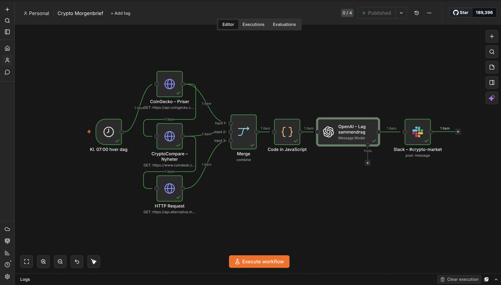
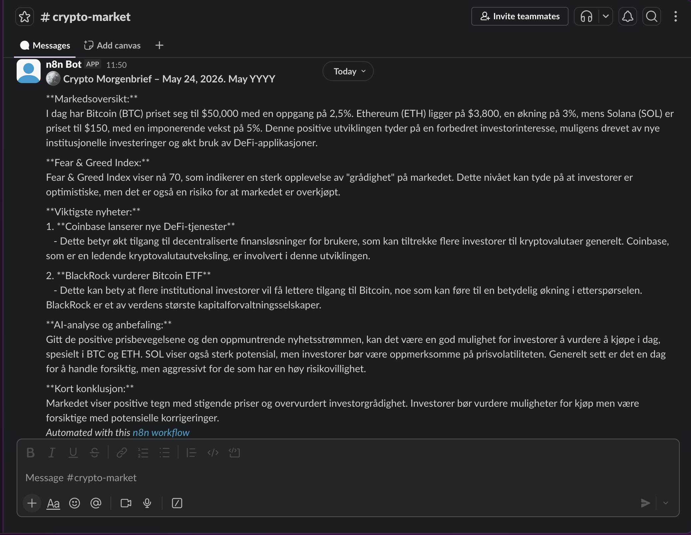

En autonom AI-agent som henter markedsdata, analyserer nyheter og leverer et personlig crypto-sammendrag til Slack kl. 07:00 — hver dag, uten at jeg løfter en finger.
Hver morgen bruker folk i crypto-bransjen tid på å sjekke priser, lese nyheter og danne seg et bilde av markedet.
Jeg ville automatisere akkurat det — en agent som gjør jobben mens du sover, og leverer en ferdig analyse klar til frokost.
Resultat: fullstendig markedsanalyse med AI-anbefaling — automatisk, hver dag.
Priser på BTC, ETH og SOL fra CoinGecko, Fear & Greed Index og siste nyheter fra CoinDesk — alt samlet automatisk.
GPT-4o-mini analyserer dataene og lager et strukturert sammendrag med konkret kjøp/hold-anbefaling.
Sendes automatisk til Slack-kanalen #crypto-market hver morgen — klar til du åpner telefonen.

Kl. 07:00 popper dette opp i #crypto-market — ingen input fra meg:

Det jeg har bygget er grunnmuren. Selve agentstrukturen kan enkelt utvides — og er direkte relevant for bedrifter som Bitcoin Norge:
Koble til faktiske holdings og gi personalisert analyse basert på det man eier.
Automatisk varsel til Slack når BTC, ETH eller SOL beveger seg mer enn X% på én time.
Skreddersydd daglig analyse for ledergruppen — med nyheter og regulatorisk info relevant for norsk crypto-marked.